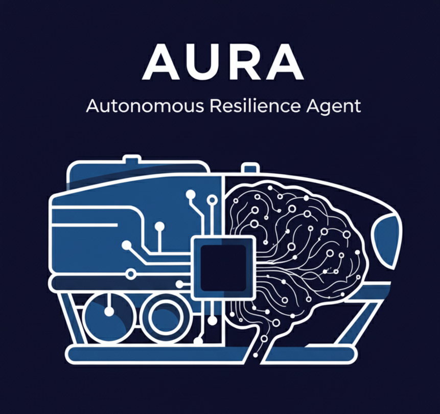
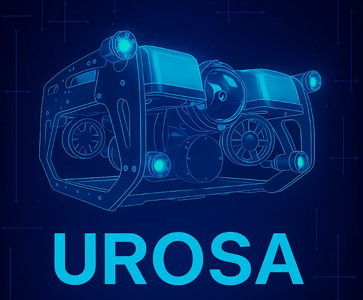
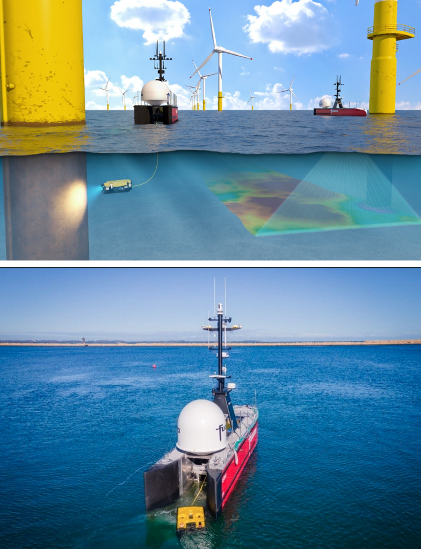
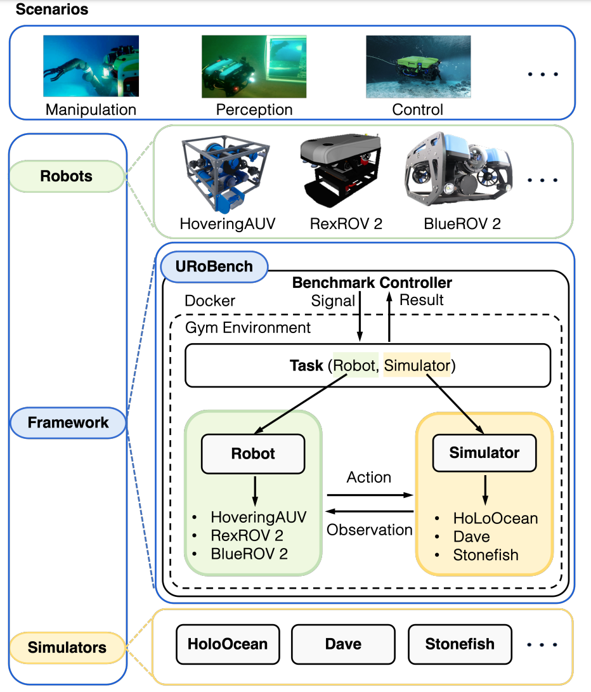

AURA (Autonomous Resilience Agent) is an AI framework I developed to help operators manage underwater vehicles when things go wrong. Using Human-in-the-Loop Distillation, it translates noisy sensor data into clear anomaly hypotheses, works with the operator to diagnose root causes, and retains that expertise so the system keeps getting smarter. This creates an adaptive, explainable partner for resilient human-robot teams in safety-critical marine missions. Accepted to IROS 2026, AURA is part of my broader research direction: building AI that does not merely classify sensor readings, but reasons about them and explains its conclusions.

UROSA (Underwater Robot Self-Organizing Autonomy) is a new software architecture I created to rethink how underwater robots make decisions. Instead of hard-coding every behavior, UROSA uses a team of specialized AI agents that share information, negotiate plans, and adapt collectively as the mission evolves. This is a deliberate move away from brittle, rule-based autonomy toward genuinely cognitive underwater systems that can handle the unexpected without waiting for a human to micromanage them. It combines distributed AI, multi-agent coordination, and robust control into an architecture designed for the unpredictability of the ocean.

This postdoctoral research targets one of the hardest automation problems in the energy sector: maintaining offshore wind farms without sending people to sea. I developed a multi-agent robotic framework that coordinates an Autonomous Underwater Vehicle (AUV), an Autonomous Surface Vehicle (ASV), and a robotic manipulator into a single, cooperative inspection and maintenance system.
The work combines advanced software architectures, autonomous control, and marine dynamics to keep robots operating reliably in harsh offshore conditions. Core technical contributions include dynamic disturbance rejection, tightly coordinated multi-agent control, and real-time decision-making under uncertainty. Beyond the algorithms, the project evaluates the real-world feasibility of uncrewed wind farm maintenance, with the potential to cut operational costs, reduce human risk, and lower the carbon footprint of crewed service vessels.

Operating a tethered underwater robot from a surface vehicle is deceptively difficult: every wave and current acting on the ASV is transmitted straight to the AUV through the cable. This work introduces a novel motion-control framework that explicitly models and compensates for these coupled disturbances, enabling an Autonomous Underwater Vehicle (AUV) and Autonomous Surface Vehicle (ASV) to operate as a single coordinated system in real marine conditions.
The approach bridges nonlinear marine dynamics, multi-robot coordination, and robust control to keep the tethered team stable and purposeful despite waves, wind, and currents. It is a direct contribution to making tethered marine robotics dependable enough for field operations.

We built a fully autonomous underwater vehicle from the ground up as a research platform - not a kit, not an off-the-shelf ROV, but our own machine: mechanical structure, propulsion, electronics, and a complete sensor suite (DVL, sonar, vision) integrated under a ROS 2 control architecture. Fitted with a robotic manipulator, the vehicle goes beyond inspection into intervention, which is what makes it scientifically interesting: a floating base and a moving arm form a coupled multibody system where every motion of one disturbs the other.
The platform serves as a working testbed for the core problems in underwater autonomy - multibody dynamics and whole-body control of floating-base manipulation, SLAM and perception in turbid, unstructured conditions, and fully autonomous mission execution from planning through to manipulation. Because we control the hardware, software, and control stack, new ideas move quickly from derivation to simulation to open-water validation on a system we understand end to end.

This research focuses on underwater manipulation, combining context-aware behavior learning with heuristic motion memory. The goal is to push precision and efficiency in real subsea operations by developing motion planners that recover gracefully when sensors fail and compute fast enough to run onboard. Accepted to IROS 2025, this work advances trajectory and full-body motion optimization for underwater vehicle-manipulator systems operating in harsh, partially observable environments.

A hybrid teleoperation setup for controlling an underwater vehicle and its manipulator together: a joystick drives the AUV, while a webcam tracks the operator's hand in real time to open and close the gripper and set the end-effector position. Hand tracking and depth estimation run through my camera_depth_ros2 pipeline, and the arm motion is planned and executed with ros2_moveit_manipulators using MoveIt 2. The system was tested in a pool with the physical AUV and manipulator before moving to open water.


This paper introduces URoBench, a modular benchmarking framework to standardize the evaluation of Reinforcement Learning (RL) algorithms across underwater robotics simulators. By rigorously testing HoloOcean, Dave, and Stonefish under identical RL conditions, it demonstrates that fair, comparable, and reproducible evaluation is possible in marine robotics-something the community needs to move learning-based methods from simulation to sea trials.
